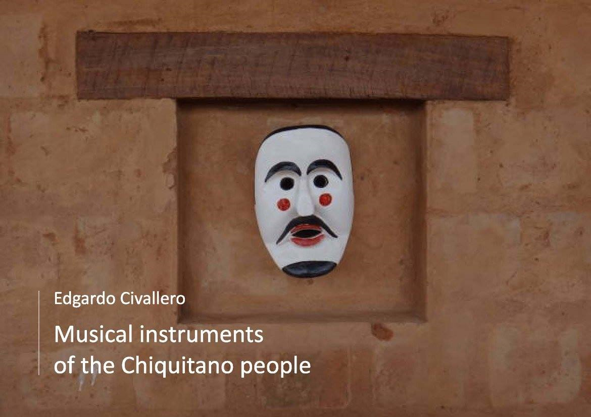

Musical instruments of the Chiquitano people
Home > Digital books on music. Series 1 > Musical instruments of the Chiquitano people
How to cite this work: Civallero, Edgardo (2025). Musical instruments of the Chiquitano people. Archive edition. Bogota: El Zorro de Abajo Editora.
Download in PDF.
This book constitutes a monographic study of the sonic and organological system of the Chiquitano people, one of the most significant Indigenous societies of the eastern lowlands of Bolivia. Based on historical sources, ethnographic testimonies, and fieldwork, the text reconstructs with precision the trajectory, morphology, and cultural function of the traditional musical instruments of this society, revealing the complex synthesis between precolonial legacies, missionary influences, and local processes of sonic reinvention.
The study opens with a historical contextualization of the Chiquitano, settled between the departments of Santa Cruz and Beni and extending into Brazil's Mato Grosso. It explains that this identity is the result of an amalgam of multiple groups — Piñoca, Paunaca, Quitema, and Zamuco, among others — brought together in the Jesuit reductions of the 17th century. Within these settings, an intense cultural hybridization took place, reflected in music. Colonial chronicles note that daily life was marked by sound: at dawn, at dusk, in games, at weddings, and in agricultural ceremonies, music structured social existence. The Jesuits, by establishing chapels and choirs, introduced European instruments, yet the Indigenous repertoire never disappeared; it remained active within community ensembles known as cabildos, where traditional flutes and drums continued to be played autonomously.
Two major systems are distinguished: the ecclesiastical system, linked to the missionary Baroque heritage, and the traditional system of Indigenous origin, which forms the core of the book. Within this second system, instruments are divided into aerophones and membranophones. Among the former are the transverse flute buxíxh, the vertical duct flute natïraixh, the panpipes yoresóx and yoresoma, the transverse flute tyopïx, and the horn sananáx.
The buxíxh is a transverse flute with six frontal holes, variably tuned and with a rough timbre. Formerly its use was restricted to certain months, but today it is played year-round, in both ritual and secular repertoires. The natïraixh, a duct flute with internal windway, made from cane and sealed with a wax plug, has seven holes. Of Jesuit origin, its performance context is associated with the festive cycle of the Immaculate Conception and Carnival, where it acts as a mediator between the living and the spirits.
The panpipe yoresóx consists of two rows of three complementary tubes, played by two performers symbolizing the masculine/feminine dual principle, and is performed between Lent and Saint Peter's feast. The yoresoma, with a single row, is played solo between All Saints and the Immaculate Conception, and may appear in "mother" and "daughter" pairs tuned at the octave. Both embody the sonic reciprocity characteristic of the peoples of the region.
The most enigmatic instrument is the tyopïx, a large transverse flute with two holes, now on the verge of disappearance. Its performance was historically linked to agricultural cycles, especially maize harvest, and to forest-clearing rituals. D'Orbigny observed it during the huitoró, a ball game accompanied by flutes and drums, noting its low timbre and its range limited to three notes. In contrast, the sananáx represents a different type of aerophone: a short cane horn with a dried armadillo tail serving as a resonating bell, producing a single tone and used exclusively during Carnival.
The membranophones include the taboxiox (or tamborita) and the tampora (bass drum). Both derive from European models, but are adapted to local materials — oak woods, hides of deer, howler monkey, or wildcat — and to local techniques. The taboxiox, high-pitched and lightweight, is played hanging at the side and accompanies flutes in processions; the tampora, with a wider body and deep resonance, marks the main pulse in major festivities. The text examines the making of their drumheads, tensioning systems, snares, and mallets, as well as the use of the jipurí, a practice instrument made from palm leaf, reflecting the pedagogical and symbolic dimension of Chiquitano musical learning.
Each instrument possesses its own calendar, symbolic gender, and defined ritual function, integrating into a cyclical order that links sound with agricultural and religious time. The reconstruction — based on Jesuit sources, descriptions by D'Orbigny, Métraux y Snethlage, as well as contemporary documentation from Bolivia and Brazil — demonstrates that the Chiquitano sonic universe constitutes a living synthesis of Amazonian, Andean, and European traditions.
Taken as a whole, this work shows that Chiquitano instruments are not merely objects, but structures of knowledge, in which material and cosmology are intertwined in a single act of cultural resonance.